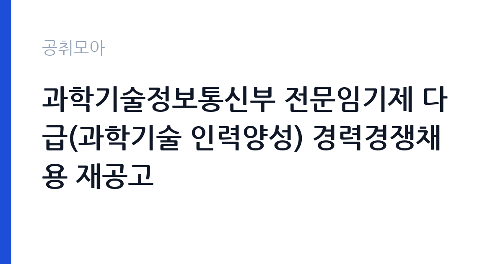

[국가기관] 과학기술정보통신부 전문임기제 다급(과학기술 인력양성) 경력경쟁채용 재공고
과학기술정보통신부 · 세종 · 마감 2026-10-06 (D-14) · 출처 나라일터

한눈에 보는 모집 조건
| 기관 | 과학기술정보통신부 |
|---|---|
| 공고명 | 과학기술정보통신부 전문임기제 다급(과학기술 인력양성) 경력경쟁채용 재공고 |
| 고용형태 | 임기제 |
| 근무지 | 세종 |
| 게시일 | 2026-09-23 |
| 마감일 | 2026-10-06 (D-14) |
지원자격, 이렇게 읽으세요
- 전문임기제 다급 1명
- 접수 ~2026-10-06 마감
- 세부 조건은 원문 공고문 확인
전문임기제 다급은 공무원 경력경쟁채용으로 선발되며, 자격요건은 경력과 학위, 또는 경력과 학위를 함께 보는 방식으로 공고문에 제시되었습니다. 세부 기준은 반드시 원문 공고문에서 확인하셔야 합니다. 전문임기제는 일반직과 달리 해당 분야의 전문성을 중심으로 평가하므로, 과학기술 인력양성 관련 정책 기획이나 사업 운영, 연구지원 경험을 어떻게 증명할지가 중요합니다. 재직증명서와 경력기술서 등 증빙서류를 미리 준비하시고, 학위 예정자는 인정 여부를 공고문에서 확인하시기 바랍니다. 문의처는 044-202-4147입니다.
이 공고의 포인트
이 공고의 가장 큰 포인트는 재공고라는 점입니다. 재공고는 앞선 전형에서 최종 합격자가 나오지 않았을 때 다시 내는 것으로, 지원자 풀이 줄어들어 준비된 지원자에게는 유리하게 작용할 수 있습니다. 두 번째 포인트는 전문임기제 다급이라는 직급입니다. 임기제 공무원은 계약 기간이 정해져 있지만, 전문 분야의 실무를 중심적으로 맡게 되므로 정책 현장 경험을 쌓기에 좋습니다. 세 번째로 과학기술 인력양성이라는 직무는 국가 연구개발 인재 정책을 직접 다루는 영역이라, 향후 관련 기관으로의 경력 확장에 도움이 될 수 있습니다.
전형은 어떻게 진행되나
전형은 경력경쟁채용 방식으로 진행됩니다. 원문에 따르면 서류전형과 면접시험을 거쳐 최종 합격자를 결정하는 구조로 보이며, 세부 일정과 배점은 원문 공고문에서 확인하셔야 합니다. 응시방법은 등기우편과 방문접수로, 온라인 접수가 아니라는 점에 유의하시기 바랍니다. 마감일 우편 소인 기준인지 도착 기준인지가 당락을 가를 수 있으므로, 가급적 마감 2~3일 전에는 발송을 마치시는 것이 안전합니다. 방문접수 시에는 접수처와 접수 시간을 미리 확인하시기 바랍니다.
원문에서 확인한 전형 방식
○ 모집분야 : 과학기술 인력양성 ○ 선발직급 : 전문임기제 다급 1명 ○ 고용형태 : 임기제 공무원 ○ 자격요건 : 경력, 학위, 경력+학위 등 ○ 접수기간 : 2026년 9월 23일 ~ 10월 6일 ○ 응시방법 : 등기우편 및 방문접수 ○ 문의처 : 044-202-4147
이런 분께 추천해요
- 과학기술 정책이나 연구개발 인재 양성 사업 분야에서 실무 경험을 쌓으신 분
- 세종 근무가 가능하고 임기제 공무원으로 정책 현장에 참여하고 싶으신 분
- 재공고 기회를 활용해 경쟁 부담을 낮추고 전문성을 어필하고 싶으신 분
지원 전 체크리스트
- 원문 공고문의 자격요건 세부표에서 본인의 경력·학위가 다급 기준에 맞는지 확인했습니다
- 등기우편 접수 마감 기준(소인·도착)을 확인하고 발송 일정을 잡았습니다
- 경력증명서·재직증명서·학위증명서 등 증빙서류를 모두 준비했습니다
- 문의처 044-202-4147로 불확실한 사항을 접수 마감 전에 확인했습니다
모집 일정과 제출 타이밍
접수 기간은 2026년 9월 23일부터 10월 6일까지로 약 2주간입니다. 추석 연휴와 겹칠 수 있는 시기이므로 우체국 영업일을 고려해 접수 일정을 앞당기시는 것이 좋습니다. 서류전형 합격자 발표와 면접 일정은 원문 공고문과 나라일터 추가 공지를 통해 확인하시기 바랍니다. 등기우편 접수는 배송 소요일을 감안해 최소 마감 3일 전 발송을 권장합니다. 방문접수를 계획하신다면 정부세종청사 출입 절차와 접수처 운영 시간을 사전에 문의하시기 바랍니다.
직무 이해하기: 국가기관
과학기술 인력양성 직무는 이공계 인재를 키우는 국가 정책과 사업을 기획하고 운영하는 일을 맡습니다. 과기정통부는 과학기술 인재 육성 종합계획과 이공계 인력 지원 사업을 총괄하는 부처로, 담당자는 관련 예산 사업의 관리와 제도 개선, 유관 기관과의 협업 등을 수행하게 됩니다. 정책 문서 작성과 이해관계자 협의가 많은 자리이므로, 보고서 작성 능력과 조정 역량이 중요합니다. 국가기관 카테고리 공고로, 공공정책 분야 경력을 쌓으려는 분께 적합한 직무입니다.
자기소개서 작성 팁
경력경쟁채용에서는 자기소개서보다 직무수행계획서와 경력기술서가 당락을 좌우합니다. 과학기술 인력양성 분야에서 본인이 수행했던 사업의 규모와 역할, 성과를 수치와 함께 구체적으로 기술하시기 바랍니다. 추상적인 포부보다는 맡게 될 업무에 대한 이해와 실행 계획을 보여주는 것이 좋습니다. 재공고라는 점을 언급하며 지원하는 동기를 솔직하게 밝히되, 해당 분야의 전문성을 중심으로 서술하시기 바랍니다. 오탈자와 서식 요건을 다시 한번 점검하시기 바랍니다.
면접 준비 포인트
면접에서는 과학기술 인력양성 정책에 대한 이해도를 직접적으로 질문받을 가능성이 큽니다. 최근 과기정통부의 인재 육성 관련 발표나 사업 공고를 미리 살펴보시고 본인의 견해를 정리해 두시기 바랍니다. 경력 기반 질문에는 STAR 기법으로 구체적인 사례를 답변하시고, 임기제라는 근무 형태에 대한 수용 의사를 명확히 밝히시는 것이 좋습니다. 세종 근무와 업무 강도에 대한 질문에도 솔직하고 긍정적으로 답변하시기 바랍니다.
급여·근무조건 읽는 법
보수 수준은 원문 공고문에서 확인하셔야 합니다. 전문임기제 공무원의 봉급은 공무원보수규정 별표에 따른 연봉제 적용을 받으며, 다급의 경우 해당 별표의 연봉 한도 내에서 경력과 전문성을 고려해 책정됩니다. 2026년도 직종별 공무원 봉급표는 인사혁신처 홈페이지에서 조회하실 수 있습니다. 임기제 공무원은 일반직과 호봉 체계가 다르므로, 본인의 예상 연봉은 원문의 보수 조건과 문의처를 통해 확인하시기 바랍니다. 수당과 복리후생의 세부 항목도 원문에서 확인하시기 바랍니다.
자주 묻는 질문
- 재공고라는 것은 어떤 의미입니까
앞선 공고에서 적격자를 선발하지 못해 다시 공고한 것입니다. 지원 자격이 완화된 경우도 있으니 원문 공고문을 처음부터 끝까지 다시 읽어보시기 바랍니다. - 전문임기제와 일반직의 차이는 무엇입니까
전문임기제는 특정 전문 분야의 업무를 기간을 정해 수행하는 공무원입니다. 임용 기간이 정해져 있으며, 해당 분야의 경력과 전문성을 중심으로 선발됩니다. - 등기우편으로만 접수할 수 있습니까
이 공고는 등기우편과 방문접수를 안내하고 있습니다. 온라인 접수는 운영하지 않으므로, 마감 기준과 접수처를 원문에서 반드시 확인하시기 바랍니다.
함께 보면 좋은 공고
[국가기관] 육군교육사령부 한시임기제군무원(응급구조담당) 채용 — 마감 2026-10-06[국가기관] 2026년 제5회 식품의약품안전처 공무원(임기제) 경력경쟁채용시험 공고 — 마감 2026-10-06[국가기관] 2026년 제7회 해양수산부 전문임기제 공무원(인공지능 기획) 경력경쟁채용시험 공고 — 마감 2026-10-02출처: 나라일터 공개정보를 바탕으로 공취모아가 정리한 안내글입니다. 모집 조건·일정은 변경될 수 있으니 지원 전 반드시 원문 공고문을 확인하세요. 본 글은 정보 제공용이며 합격을 보장하지 않습니다.